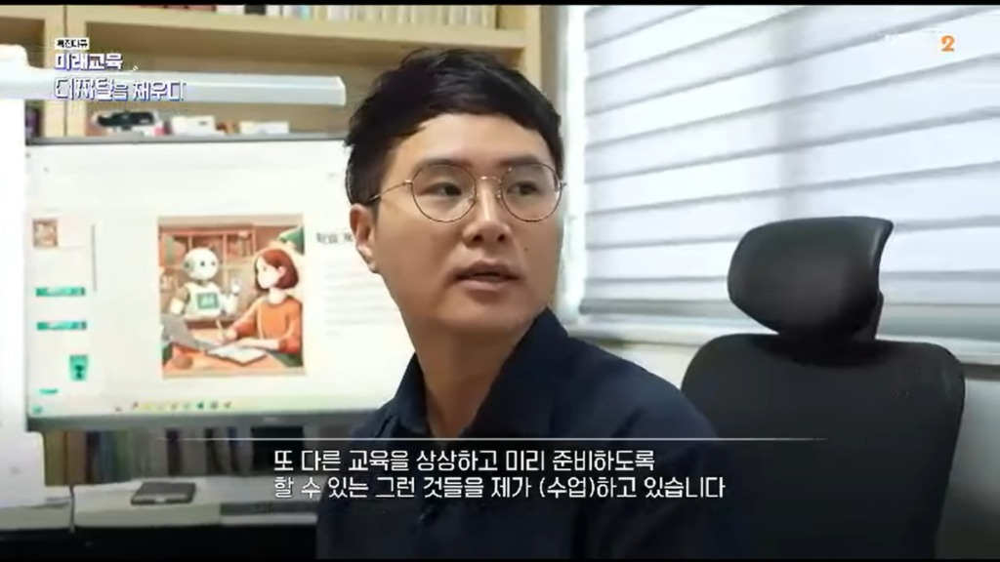

Profile
경력
노대원은 제주대학교 국어교육과 교수이자 문학평론가입니다. AI와 문학, 한국 SF와 포스트휴머니즘, 생성형 AI 문학교육을 연구하며 문학 연구·비평·교육을 연결합니다.
Education, Career & Awards
학력·경력·수상
학력
2010.02.19. - 2015.08.18.
서강대학교 국어국문학 박사
2008.02.21. - 2010.02.17.
서강대학교 국어국문학 석사
2002.02.26. - 2008.02.19.
서강대학교 국어국문학, 신문방송학 학사
* 최우수 졸업(Summa Cum Laude), 조기 졸업, 복수 전공
경력
2016.03.01. – 현재
제주대학교 국어교육과 교수
2021.03.01. – 현재
제주대학교 교육대학원 인공지능융합교육 전공 교수
2021.06.01. – 현재
제주대학교 지능소프트웨어교육연구소 연구위원
2026.03.01. – 현재
고려대학교 국어교육과 객원교수
2025.01.31. – 2026.01.30.
2022.03.01. – 2024.02.29.
제주대학교 국어교육과 학과장
2015.08.31. – 2016.02.28.
서강대학교 전인교육원 시간강사
2015.08.31. – 2016.02.28.
강원대학교 기초교육원 시간강사
2014.03.01. – 2014.08.31.
강원대학교 스토리텔링학과 시간강사
2013.03.01. – 2016.02.28.
공주대학교 기초교육원 시간강사
2013.03.01. – 2014.02.28.
명지대학교 문예창작학과 시간강사
2011.01.01.
2008.01.08.

수상
2025.07
한국문화예술위원회 문학 비평담론 활성화(심층비평) 사업 선정 한국문화예술위원회
2023.07
대한민국학술원 우수학술도서 선정 대한민국학술원
2023.01
연구업적 우수교수상 (중견 부문) 제주대학교
2022.12
논문공모전 우수논문 한국청소년문화연구소
2021.01
연구업적 우수교수상 (신진 부문) 제주대학교
2018.08
대산창작기금 평론 부문 대산문화재단
2015.02
제17회 서강 논문상 서강대학교 대학원
2014.11
한국연구재단 우수논문 선정 한국연구재단
2013.02
제15회 서강 논문상 서강대학교 대학원
2011.02
제13회 서강 논문상 서강대학교 대학원
2011.01
<문화일보> 신춘문예 평론 부문 당선 문화일보사
2010.02
제12회 서강 논문상 서강대학교 대학원
2008.01
제6회 대산대학문학상 평론 부문 수상 대산문화재단
2007.11
청년문학상 비평 부문 당선, 시 부문 가작 서강대학교
2005.11
제43회 범대학문학상 평론 부문 당선 숙명여자대학교
2005.11
제2회 전국대학생 부경현상문예 공모 희곡 부문 당선 부경대학교
2005.10
제1회 녹색문화 공익광고/슬로건 공모전 수상 한국녹색문화재단
2004.11
외문문화상 시 부문 당선 한국외국어대학교
2002.11
청년문학상 시 부문 가작 서강대학교
Teaching
교육 경력
학부 교과목
국어교육과 학부 과정 : 현대문학비평교육론, 한국현대작가론, 현대소설교육론, 현대소설작품교육론, 희곡영상문학교육론, 독서교육론
교양 과목 : SW와 AI로 시작하는 문제해결, SF의 이해, 소리의 과학과 인문학, 글쓰기
대학원 교과목
일반대학원 국어교육과 박사 과정 : 현대문학강독, 현대문학이론특강, 문학연구방법과실제, 서사교육방법론연구, 현대문학장르교육론연구, 한국현대소설작품교육론특강
교육대학원 국어교육과 석사 과정 : 한국문학사교육연구, 독서교육연구, 국어교육논문연구
교육대학원 인공지능융합교육 전공 : 인공지능과 문학, 생성 AI와 교육
한국어교육 협동과정 : 한국문학개론, 한국문화의 이해
고려대 국어교육과 대학원 : 현대소설의이론과교육(AI와 문학(교육))
Academic Service
학술 · 사회 봉사
2026.
포스텍 SF어워드 심사위원. 포항공과대학교.
2023.09.19.~2025.08.31
교과용도서(고등학교 문학) 검정심의회 연구위원. 한국교육과정평가원.
2024
SF어워드 장편소설 분야 심사위원장. 국립과천과학관.
2023
SF어워드 장편소설 분야 심사위원. 국립과천과학관.
2022
SF어워드 중단편소설 분야 심사위원. 국립과천과학관.
2018.01.04. ~2018.02.26.
교과용도서(고등학교 문학) 검정심의회 연구위원. 한국교육과정평가원.
~현재
제주대 지능소프트웨어교육연구소 『지능정보융합과 미래교육』 편집위원
2026.01.~2027.12.
한국비평문학회 지역이사
2025.01.~2026.12.
현대문학이론학회 편집위원
2025.07.~2027.06.
국어국문학회 편집위원, 학술이사, 지역이사
2025.03.~2027.02.
한국문학연구학회 지역이사
2025.01.~2026.12.
문학과환경학회 편집위원회 편집위원
2024.08.~2026.07.
한국문학이론과 비평학회 편집위원
2023.07.~2025.06.
국어국문학회 편집위원, 상임이사(대외이사), 지역이사
2023.07.~2024.06.
한국어교육학회 지역이사
2023.03.~2025.02.
이화어문학회 지역이사
2023.03.~2024.02.
한국현대문학회 연구이사
2023.01.~2026.12.
한국현대문예비평학회 전공이사, 지역이사
2023.01.~2024.12.
어문연구학회 편집위원
2022.11.~현재
한국포스트휴먼연구회 운영위원, 학술위원, 편집홍보이사
2022.09.~2024.08.
청람어문교육학회 편집위원
2022.07.~2024.06.
대중서사학회 연구이사
2022.03.~2025.02.
백록어문교육학회 편집위원장
2022.01.~2023.12.
한국독서학회 연구이사
2022.01.~2023.12.
겨레어문학회 지역이사
2021.01.~2024.12.
영주어문학회 연구윤리위원
2020.03.~2025.02.
이화인문과학원 Trans-Humanities(탈경계인문학) 편집위원
2019.11.~2023.10.
한국문학치료학회 편집위원, 지역이사
2019.01.~2024.12.
현대문학이론학회 편집위원, 출판이사
2018.08.~2024.07.
한국문학비평과이론학회 편집위원, 지역이사